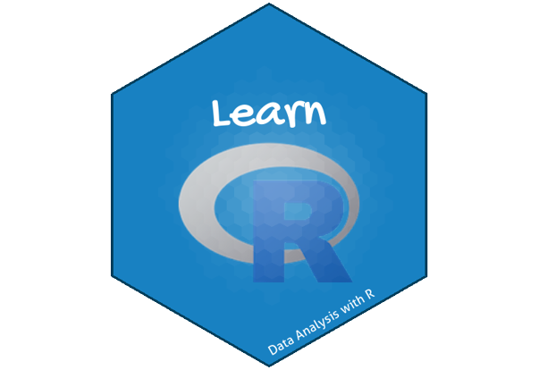

Agenda
- Introduction & Setup
- Background
- Basic Terms in R
- Getting Started With R
- R Data Types
- Operators in R
Introduction
About the Course
- What do you hope to get out of the course?
- R for Research is an introductory course designed to equip learners with essential skills in using the R programming language for research purposes.
- Why do you want to use R?
- The course focuses on the practical application of R in data manipulation, statistical analysis, data visualization, and reproducible research.
Learning Objectives
Data Manipulation:Learn how to import, clean, and transform data in R for research purposes.Data Visualization:Master techniques for creating effective data visualizations in R to communicate research findings visually.Statistical Analysis:Develop skills in conducting statistical analysis using R for hypothesis testing, regression analysis, and other statistical tests.Reproducible Research:Implement principles of reproducible research using R to document and organize code, data, and analysis for replicability.
Course Platforms
- Website: https://chiraltraining.github.io/RforResearch/
- Github: https://github.com/chiraltraining/RforResearch
- Materials will be uploaded the night before class.
- Please check regularly official Telegram group for this course.
We are constantly trying to improve content! Please refresh/download materials before class.
Course Format
- Lecture with live coding (possibly “Interactive”)
- Lab/Practical experience
- Two 5 min breaks each session - timing may vary
Assignment Policy
- 20% of your grade will be determined by an assignment during normal class hours.
- 50% of your grade will come from a 5-10 page report that explores in further detail one of the research areas in the class syllabus
- We expect that students will use original data collection, whether quantitative or qualitative analysis, to answer the questions posed.
- 30% of your grade will be determined by your attendance and participation in class.
Required Textbooks
The following books purchased and are available at the online book store. We have also a placed a copy of each on reserve at our Telegram group.
Acknowledgements

This work is licensed under a Creative Commons Attribution-ShareAlike 4.0 International License (CC BY-SA4.0).
Questions
Please add any questions to the public Zoom chat.
Coordinators will monitor the chat
We’ll also have time for questions at the break and at the end